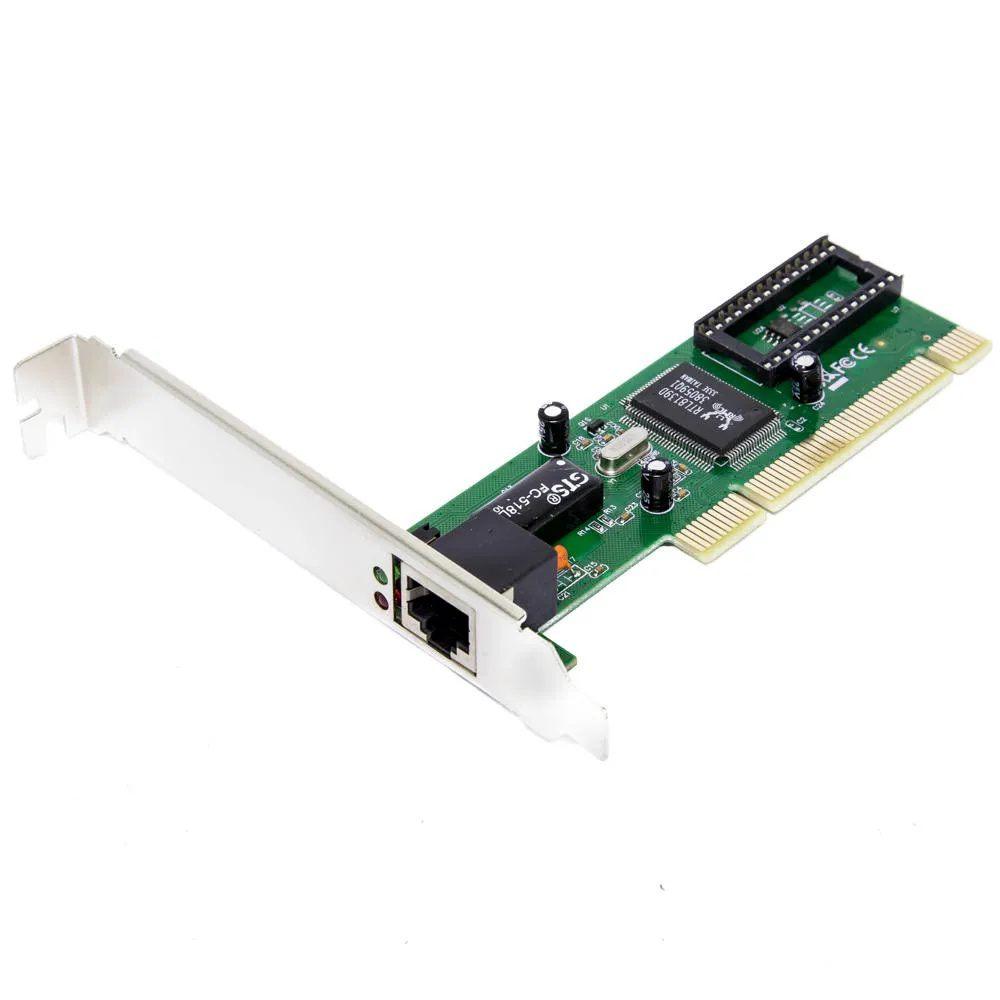

Placas de rede

Placas de Rede Ethernet (com fio)
Descrição: As placas de rede Ethernet com fio são projetadas para conexões de rede físicas, usando cabos de
par trançado, fibra óptica ou coaxial. Elas são amplamente usadas em redes locais (LANs) e oferecem alta
confiabilidade e velocidades de transmissão.
Modelos Populares: Alguns fabricantes populares de placas de rede Ethernet incluem Intel, Realtek, Broadcom e Marvell.
Características: Os modelos variam em termos de velocidade (por exemplo, 1 Gigabit Ethernet ou 10 Gigabit Ethernet),
compatibilidade com padrões (como IEEE 802.3) e recursos adicionais, como suporte a VLANs (Virtual LANs) e QoS
(Quality of Service).
Placas de Rede Wi-Fi (sem fio)
Descrição: As placas de rede Wi-Fi permitem conexões sem fio a redes locais (LANs) usando o padrão IEEE 802.11.
Elas são comuns em laptops, smartphones, tablets e desktops equipados com adaptadores Wi-Fi.
Modelos Populares: Fabricantes conhecidos de placas de rede Wi-Fi incluem Intel, TP-Link, ASUS, Netgear e Linksys.
Características: Os modelos variam em termos de suporte a diferentes padrões Wi-Fi (como 802.11ac, 802.11ax),
frequências (banda 2,4 GHz e 5 GHz), velocidades de transmissão (até vários gigabits por segundo), e recursos adicionais,
como antenas múltiplas, MU-MIMO (Multi-User, Multiple Input, Multiple Output) e Beamforming.
Placa de rede Wi-Fi/Bluetooth
Descrição: Placas de rede Bluetooth são geralmente incorporadas a placas de rede Wi-Fi ou dispositivos móveis. Elas permitem a comunicação sem fio de curto alcance entre dispositivos, como fones de ouvido, teclados, mouses e smartphones.
Populares: Como o Bluetooth é amplamente padronizado, não é comum distinguir entre modelos específicos de placas de rede Bluetooth.
Conectores de rede
Conector RJ-45 (Registered Jack 45)
Descrição: O conector RJ-45 é o conector mais amplamente utilizado em redes com fio, especialmente em redes Ethernet. Ele possui oito pinos (ou oito posições de contato) dispostos em uma configuração de oito pinos, o que o torna facilmente identificável.
Modelos Populares: Os conectores RJ-45 seguem padrões de design e são compatíveis entre diferentes fabricantes.
Características: O conector RJ-45 é usado em cabos Ethernet Cat5e, Cat6, Cat6a, Cat7 e Cat8 para fornecer conexões com fio em redes locais (LANs). Ele suporta várias velocidades, desde 10/100 Mbps (Fast Ethernet) até 1 Gbps (Gigabit Ethernet) e 10 Gbps (10 Gigabit Ethernet).
Conector RJ-11(Registered Jack 11)
Descrição: O conector RJ-11 é menor que o RJ-45 e é comumente usado para cabos de telefone e algumas conexões DSL (Digital Subscriber Line). Ele possui quatro a seis pinos.
Modelos Populares: Assim como os conectores RJ-45, os conectores RJ-11 seguem padrões de design.
Características: Os conectores RJ-11 são usados para conexões de comunicação de voz e dados de menor velocidade, como linhas telefônicas e fax.
Conector USB (Universal Serial Bus)
Descrição: Os conectores USB são usados não apenas para periféricos, mas também para dispositivos de rede USB, como adaptadores Wi-Fi e dongles Bluetooth.
Modelos Populares: Existem vários tipos de conectores USB, incluindo USB-A, USB-B, USB-C e Mini/Micro USB.
Características: Os conectores USB são reversíveis em sua forma mais recente (USB-C), tornando-os fáceis de conectar. Os adaptadores USB Wi-Fi geralmente usam conectores USB-A ou USB-C para se conectar a computadores e dispositivos.
Conectores de Fibra Óptica (LC, SC, ST, MTP/MPO)
Descrição: Os conectores de fibra óptica são projetados especificamente para cabos de fibra óptica, que transmitem dados usando pulsos de luz.
Modelos Populares: Existem vários modelos de conectores de fibra óptica, incluindo LC (Lucent Connector), SC (Subscriber Connector), ST (Straight Tip) e MTP/MPO (Multi-Fiber Push-On/Pull-Off).
Características: Os conectores de fibra óptica são usados em redes de alta velocidade e longa distância, como redes de backbone e redes de data centers.
Cabos de rede

Cabo Ethernet (UTP/STP):
Descrição: Os cabos Ethernet são os mais comuns em redes com fio e são usados para conectar dispositivos a uma rede local (LAN) ou à internet. Eles vêm em várias categorias, cada uma projetada para suportar diferentes velocidades e distâncias.
Modelos Populares: Cabos Ethernet Cat5e, Cat6, Cat6a e Cat7 são os mais utilizados.
Características:
Cat5e: Suporta até 1 Gigabit por segundo (GbE) a uma distância de até 100 metros.
Cat6: Suporta até 10 GbE a uma distância de até 55 metros.
Cat6a: Suporta até 10 GbE a uma distância de até 100 metros.
Cat7: Suporta até 10 GbE a uma distância de até 100 metros e oferece maior proteção contra interferência eletromagnética devido à sua blindagem.
Cabo Coaxial
Descrição: Cabos coaxiais são usados em algumas redes mais antigas e também em redes de cabo, onde são usados para transportar sinais de TV e internet.
Modelos Populares: Os tipos mais comuns são cabo coaxial RG-6 e RG-59.
Características: Cabos RG-6 são usados para redes de cabo de alta velocidade, enquanto os RG-59 são mais adequados para sinais de TV a cabo analógicos.
Cabo de Par Trançado Blindado (FTP/STP)
Descrição: Este tipo de cabo Ethernet possui blindagem metálica adicional ao redor dos pares trançados para reduzir interferências eletromagnéticas.
Modelos Populares: Cabos FTP/STP são geralmente classificados nas mesmas categorias que os cabos Ethernet não blindados.
Características: Eles oferecem maior proteção contra interferências e são usados em ambientes onde a interferência é um problema, como em locais industriais.